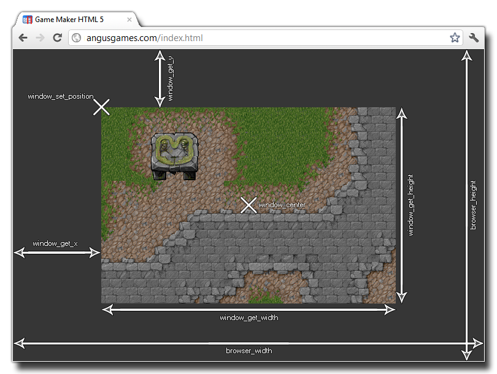

browser_width
Returns : Real
This variable holds the width (in pixels) of the browser the game is being run in. If no browser is present then the window size is returned. the following image illustrates how this variable relates to the rest of the
positioning functions available through the Window Functions.

if browser_height > window_get_height() || browser_width > window_get_width()
{
var xx, yy;
if browser_width > window_get_width()
{
xx = (browser_width - window_get_width()) / 2;
}
else
{
xx = 0;
}
if browser_height > window_get_height()
{
yy = (browser_height - window_get_height()) / 2;
}
else
{
yy = 0;
}
window_set_position(xx, yy);
}
The above code checks the width and height of the browser to see if either is larger than the current window width and height. If either of them are, it then calculates a new position for the game window within the browser.